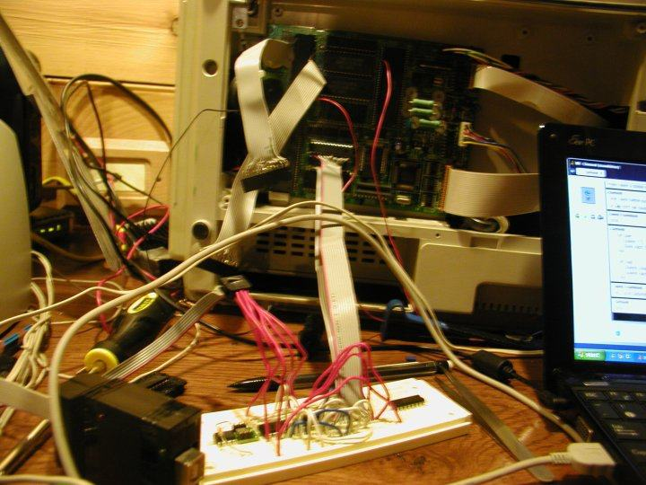

One summer I tried to build a circuit that would be able to drive the screen of a dedicated word processor that I had found at a junk shop. I didn't get my own graphics on its screen but I learned a lot.
Done while in high school